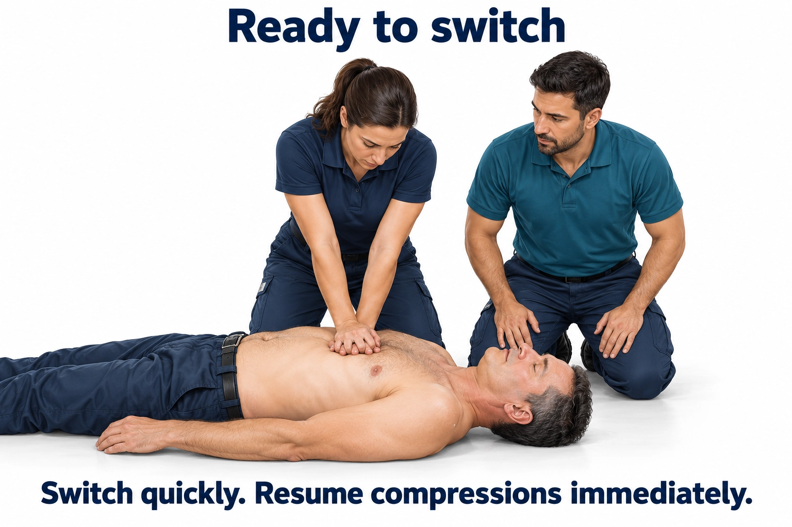
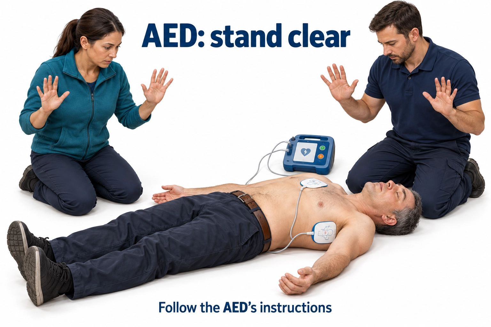
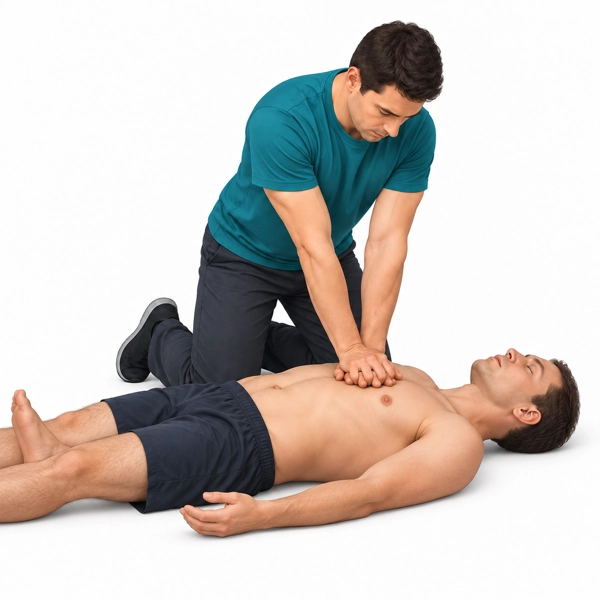
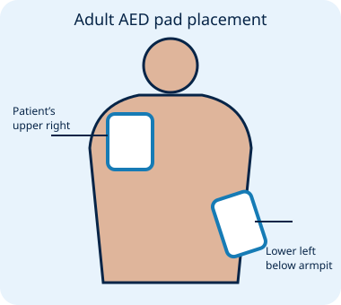
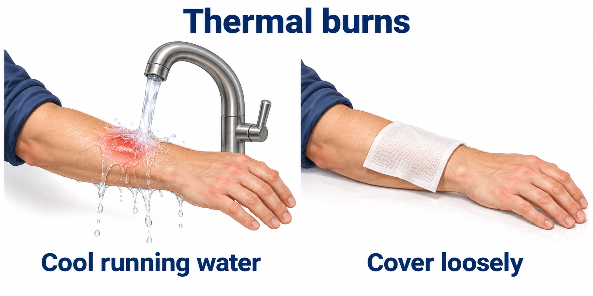
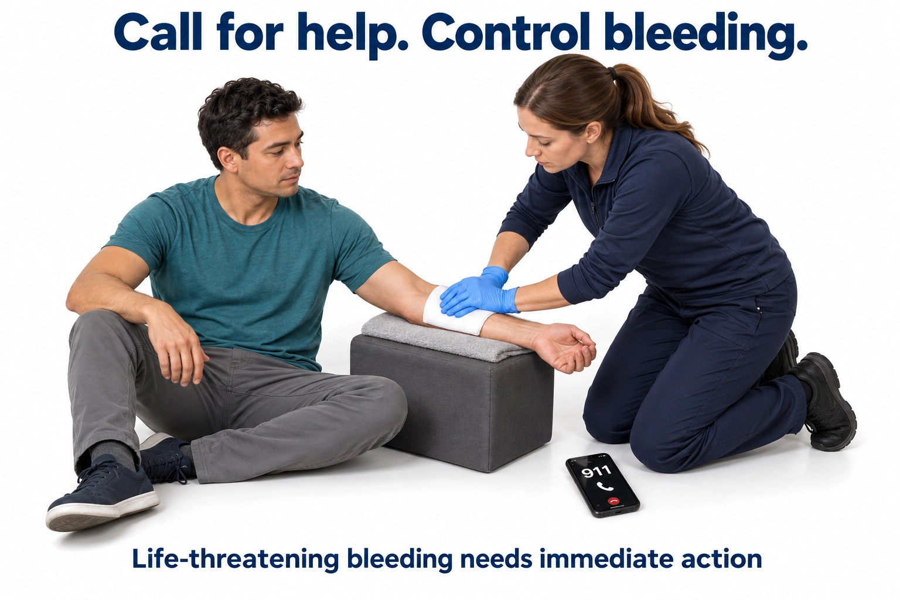

Unresponsive and not breathing normally—or only gasping? Call 911, send someone for an AED, and begin CPR promptly.
Do not delay CPR to use this app. Follow dispatcher and AED instructions.
01 · Call and get helpCall 911 on speakerphone. Send someone to find an AED.
02 · Push hard and fastFirm, flat surface. Hands on the lower half of the breastbone. 100–120 compressions/minute.
03 · Keep goingAllow full recoil. Use the AED as soon as available.
Prototype for manikin testing. Camera rate detection has not been validated for emergency use and cannot assess depth or recoil. Guidance and the pacing beat continue if tracking is unavailable.
First-time setup & privacy
Use the front camera, phone face-up beside the patient. Permission is requested only when you start a camera session. Practice on a manikin before relying on placement. Images are processed in memory on this device, not recorded or uploaded. Your progress stays in this browser; export a backup. Browser camera/audio may stop during calls, screen locking or background use. Keep the page visible. Offline guidance is available only after assets have successfully cached on this device.
TRAINING PRACTICE
Choose your section.
BLS Practice
Basic life support. Adult simulations and BLS questions, including baby and child questions.
First Aid
Written summaries and illustrations for common injuries and emergencies.
Stop the Bleed
Written summaries and illustrations for recognizing and controlling life-threatening bleeding.
Just practice CPR
Adult manikin compression practice, with a summary saved to this section.
Individual Scenarios
Written prep
MANIKIN TRAINING ONLY
Hands-on CPR practice
Place the phone face-up beside the manikin, with its front camera able to see your moving upper body. Use landscape orientation, keep it stable and the lens clear. Press Start and begin compressions; no calibration pause is required.
Practice adult hands-only CPR with continuous chest compressions. Follow the metronome for compression pace and follow dispatcher and AED instructions. Use a manikin, never a person.
The AED arrival delay is a training setup. In real care, use an AED as soon as it is available. A helper can operate the phone while you compress.
Use the iPhone’s media-volume buttons to set speaker loudness. The app’s beat-volume control adjusts the sound within that limit.
After a timed session, you can continue for another two minutes. This prototype judges movement rate only, not compression depth, recoil or clinical effectiveness.
Tap CPR only or CPR + AED to start the metronome. Use your media-volume buttons to set loudness.
Illustrated review · CPR teamwork and AED safety
Prepare to switch compressors

Have the next compressor ready. Switch quickly and immediately resume CPR.
Follow the AED’s instructions

Stand clear when the AED instructs you to for analysis or shock. After a shock, or if no shock is advised, resume CPR immediately.
Original AI-assisted teaching illustrations. Practice physical skills with an instructor and feedback manikin.
Adult hands-only CPR

Hands on the breastbone
Experimental camera rate estimate
Keep doing good CPR
—
compressions / minute · target 100–120
Start compressions now
Camera starting; follow the beat
00:00 elapsedCompressor-change reminder in 2:00
Call 911 and send someone for an AED. Use a firm, flat surface without delaying CPR. Push on the lower half of the breastbone, at least 2 inches deep while avoiding more than 2.4 inches. Let the chest return fully between pushes.
Camera view & tracking controls
Processed on this device · not recorded
Tracking uses recurring image motion, which can include unrelated movement. It is not a validated CPR detector. Continue CPR if the image is blocked; a helper may adjust the phone without interrupting the compressor.
Hand/body + image-motion tracking · Place the phone horizontally, face-up and stable beside the manikin’s chest. Keep as much of the moving arms and upper body visible as practical. Allow several seconds of consistent movement. The reader automatically selects a visible body point or consistent moving region for each compressor, then follows complete movement cycles in their strongest direction. The green marker shows its selected focus; it is not a hand-placement guide. Body tracking is checked against local image motion. When body landmarks are cropped, a close-view estimate can use agreement between two automatically selected moving regions; this is a less specific motion estimate, not confirmation of compressions. Slow rates receive two speed-up cues. A switch suggestion requires a previously detected good rate followed by sustained slowing. Good-rate encouragement repeats after each 20 seconds detected at 100–120. Technique/AED reminders occur each minute of detected CPR, with a switch reminder every two minutes. A possible pause of 10 seconds after detected CPR triggers a resume reminder only with fresh, near-static textured camera frames; tracking loss alone is not classified as a pause. Camera estimates cannot confirm a real pause or CPR quality. The last valid rate bridges brief reading gaps (up to 0.75 seconds). “--” appears while establishing or reacquiring tracking; bridged readings never count toward coaching or summaries. AED in use silences coaching and the beat. Keep the moving compressor centered and the phone still. Other repeating movements can resemble compressions; compare estimates with a feedback manikin. Video is processed on this device; depth and recoil are not measured.
SIMULATED AED · MANIKIN ONLY

PRACTICAL TRAINING SUMMARY
Your CPR practice
WRITTEN TEST PREPARATION
Build knowledge that stays.
Every answer is graded before moving on. A missed topic is prioritized until three correct answers in a row on that topic; a new error resets its streak. Different questions are used when available. This is independent practice, not an AHA certification exam.
TRAINING · ORIGINAL QUESTIONS · AHA 2025 REFERENCES
QUIZ DEBRIEF
Your results
Topics to revisit
INTERACTIVE PATIENT SCENARIOS
Choose your case.
Practice gives immediate explanations and retries. Timed assessment adds an eight-minute limit. The two-minute advance button changes simulated time only.
TRAINING SIMULATION · NOT A REAL PATIENT
BLS review 25
Incorrect option
Pick a different option.
H2H TRAINING MONITORAwaiting rhythm analysis
SIMULATED AED
CPR in progress
Electrical treatment
Select the mode, charge the device, confirm all clear, then deliver treatment.
NO ELECTRICAL MODE SELECTED
The simulated device specifies 200 J initially for shocks used in these cases. Real-device settings follow the applicable recommendation. Pacing is not a shock; successful capture requires clinical confirmation.
Medication administration
1 · Select a medication. 2 · Check its name and dose. 3 · Press ADMINISTER.
No medication selected
Training labels show scenario-appropriate doses. Route selection is not a separate simulation task. Drug choices are not all appropriate for every rhythm.
Assessment & supporting care
Session events
SCENARIO DEBRIEF
Your learning record
Priority topics
Recent sessions
Records stay in this browser. Clearing browser data or switching devices can remove them; export a backup.
Built for your review.
This prototype uses original educational questions and scenarios referencing the 2025 AHA CPR and ECC Guidelines (American Heart Association, 2025a, 2025b). It is not an AHA course, official test bank, or certification product. Content review status: awaiting your approval. Reference review: October 13, 2026.
Learning preferences
Questions always remain visible. Read Aloud is also available per question. Voice quality and availability depend on the device.
References
Camera feedback is experimental. Synthetic signal checks do not establish clinical accuracy. Phone-camera behavior during calls, manikin rate accuracy, offline behavior and different phones require physical-device testing. Emergency mode offers adult hands-only guidance; training covers BLS topics.
The official Hands to Hearts logo is included throughout the app and in its Home Screen icon.
First Aid
An image and written summary for each topic. Read at your own pace.
Learning reference for review; not a certification course. In an emergency, call 911 and follow dispatcher instructions. Hands-on skills require training.
Burns

Cool a thermal burn, then cover loosely
Cool a thermal burn with clean running water.
Recognize
Redness, blistering or damaged skin after heat exposure. Serious burns can cause little pain.
What to do
Stop contact with the heat source safely. Remove jewelry and clothing near the burn only if not stuck.
Cool with clean, cool running water for 5–20 minutes. Keep the rest of the person warm.
Cover loosely with a clean, nonstick dressing. Do not use ice, butter or creams, or break blisters.
Call 911 for deep or large burns, burns affecting the face or airway, or electrical or serious chemical burns. Chemical burns need substance-specific guidance; follow the dispatcher.
Adult choking: 5 back blows, then 5 abdominal thrusts
Alternate 5 back blows and 5 abdominal thrusts for severe choking.
Recognize
Unable to speak or breathe, weak or absent cough, or hands at the throat.
What to do
If the person can cough strongly, encourage coughing and watch closely. For severe choking, have someone call 911.
Lean them forward and give 5 back blows between the shoulder blades. Then give 5 inward-and-upward abdominal thrusts, with your fist above the navel and below the breastbone. Repeat.
Use chest thrusts when pregnant or when you cannot encircle the abdomen. If unresponsive, lower safely and start CPR with compressions. Remove only a visible object; never sweep blindly.
Call 911 for severe choking. This summary covers adults and children, not infants.
For severe choking in a responsive infant, alternate 5 back slaps and 5 chest thrusts.
Recognize
Unable to cry or breathe, a weak or absent cough, or worsening color. If the infant can cough or cry strongly, allow coughing and watch closely.
What to do
Have someone call 911. If alone with a phone, use speakerphone while providing care.
Support the infant face down along your forearm, resting on your thigh. Support the jaw without pressing the throat and keep the head lower than the chest. Give 5 back slaps with the heel of your hand between the shoulder blades.
Support the head and neck as you turn the infant face up along your forearm on your thigh, keeping the head lower than the chest. Give 5 quick chest thrusts with the heel of one hand on the center of the sternum just below the nipple line. Do not use abdominal thrusts.
Repeat until the object is expelled or the infant becomes unresponsive. If unresponsive, place on a firm, flat surface and begin infant CPR with compressions. Remove only an object you can see; never sweep blindly.
Call 911 for severe choking. Chest thrusts for responsive choking are distinct from CPR compressions. Hands-on practice is essential.
Trouble breathing, swelling of tongue or throat, faintness, or rapidly developing symptoms after an allergen. A rash may be absent.
What to do
Call 911 immediately. Help the person use their prescribed epinephrine device; trained responders may administer according to training.
For an auto-injector, use the outer middle thigh and follow that device’s instructions. Record the time.
Keep them comfortable, limit movement and monitor breathing. Follow dispatcher guidance about repeat medication. Start CPR and use an AED if unresponsive and not breathing normally.
Treat suspected anaphylaxis as an emergency. Antihistamines do not replace epinephrine.
Rest and support the injury in the position found.
Recognize
Pain, swelling, bruising, deformity or difficulty using the injured area. Movement does not rule out a fracture.
What to do
Limit use. Do not straighten a deformed limb or push exposed bone back in.
For a closed injury, use a cold pack wrapped in a thin towel for no more than 20 minutes; wait 20 minutes before repeating.
Monitor color, warmth and sensation beyond the injury. Keep a suspected head, neck or spine injury still unless movement is needed for safety or lifesaving care.
Call 911 for deformity, exposed bone, numbness or a cold limb, severe injury, or inability to move safely.
Support the injured limb in the position found. Wrap a cold pack; do not place ice directly on skin or straighten a suspected fracture.
Content and illustration positions reviewed October 14, 2026 against the linked American Red Cross and American College of Surgeons resources. Original AI-assisted instructional illustrations for Hands to Hearts / LifeSaver; not official course artwork. STOP THE BLEED® is a registered trademark of the U.S. Department of Defense. This independent reference does not imply affiliation or endorsement.
Stop the Bleed
An image and written summary for each topic. Read at your own pace.
Learning reference for review; not a certification course. In an emergency, call 911 and follow dispatcher instructions. Hands-on skills require training.
Life over limb. Do not delay a needed tourniquet for life-threatening arm or leg bleeding out of fear. Tighten until bleeding stops, secure it, and write the time. A tourniquet may hurt; pain is not a reason to loosen it.
Unsafe scene: get to safety. Do not stay in danger to hold pressure or pack a wound. For life-threatening arm or leg bleeding, rapidly apply an immediately available tourniquet if you can do so without delaying escape, then move yourself and the injured person to safety if you can do so safely. Do not enter an unsafe scene.
Recognize and call for help

Call for help and act promptly
Life-threatening bleeding needs immediate action.
Recognize
Blood spurting or flowing continuously, pooling blood, soaked clothing, or a person becoming pale, confused or faint.
What to do
Check scene safety. If the scene is unsafe, prioritize getting to safety; use the rapid tourniquet guidance above when appropriate. Call 911 or send someone to call and bring a bleeding-control kit.
Expose the wound to find the source. Wear gloves if available, but do not delay lifesaving care to find them.
Begin firm direct pressure. Use an available commercial tourniquet promptly for life-threatening arm or leg bleeding. Do not delay a needed tourniquet out of fear; follow your hands-on training and the device instructions. Keep the person warm and monitor breathing.
Call 911 immediately. Look for more than one bleeding site.
Use direct pressure for visible external bleeding while help and equipment are being obtained.
What to do
Place gauze or a clean cloth over the wound and press firmly with your hands.
Maintain uninterrupted pressure. Do not repeatedly lift the dressing to look. Keep the original dressing in place.
If bleeding remains life-threatening, use a tourniquet on an arm or leg, or pack a suitable deep wound if trained. Continue until controlled or a responder takes over.
Call 911 for life-threatening bleeding. For an embedded object, press around it instead of on it.
Tighten a commercial tourniquet until the bleeding stops.
Recognize
Use promptly for life-threatening bleeding from an arm or leg. Life over limb: uncontrolled bleeding can be fatal. An available commercial tourniquet is a lifesaving tool; follow your training and its instructions.
What to do
Place 2–3 inches above the visible wound toward the heart, never on a joint or on the wound. Follow the manufacturer’s instructions.
Pull the strap tight, twist the windlass until bleeding stops, and secure it. If bleeding persists, add a second tourniquet above the first toward the heart.
Write the application time on the tourniquet’s time strap or another clearly visible location and tell EMS. If you have no marker, remember the time and report it; do not delay bleeding control to find one. Keep the tourniquet visible.
Once applied, first-aid rescuers must not loosen or remove the tourniquet. Hand over to EMS. Removal or conversion is a decision for appropriately trained medical professionals following clinical protocols.
Call 911. Use only on arms and legs; never on the neck or torso. Maintain direct pressure while a tourniquet is being obtained when the scene is safe.
Content and illustration positions reviewed October 14, 2026 against the linked American Red Cross and American College of Surgeons resources. Original AI-assisted instructional illustrations for Hands to Hearts / LifeSaver; not official course artwork. STOP THE BLEED® is a registered trademark of the U.S. Department of Defense. This independent reference does not imply affiliation or endorsement.
References
Clinical guidance and original artwork. Dates marked n.d. are undated webpages. Citations in the text use author and year; page numbers are used only when a specific page is cited.
Hands to Hearts. (2026). LifeSaver instructional illustrations [AI-assisted illustrations].
The illustrations are original AI-assisted artwork created for Hands to Hearts (Hands to Hearts, 2026), not images reproduced from the clinical sources. Source citations identify the guidance used for the teaching content and illustration review; they do not imply endorsement.